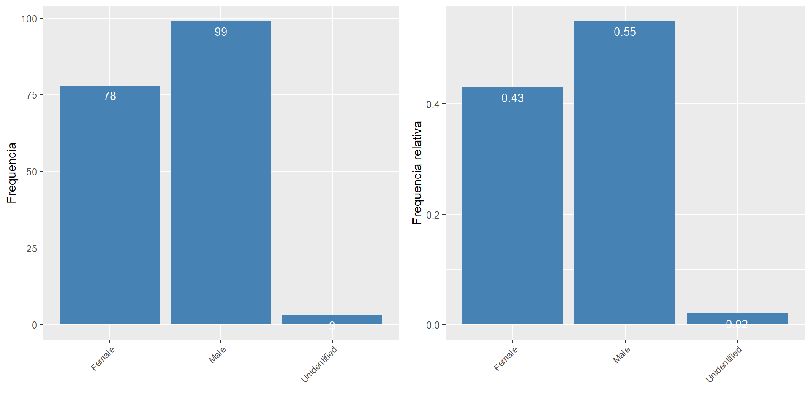
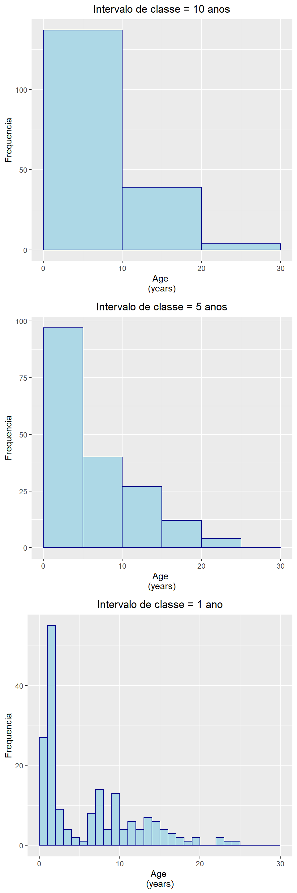
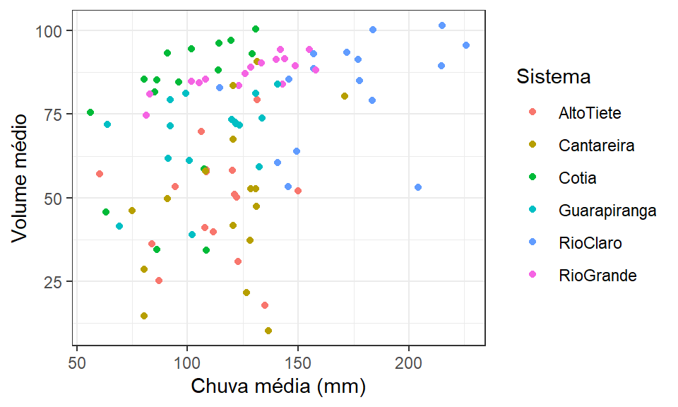

Capítulo 5 Apresentando informações em tabelas e gráficos
Vamos analisar os dados provinientes de parte de um experimento em que foram comparadas as idades de cetáceos encontrados mortos na Espanha e Escócia. Para cada indivíduo, alguns dentes foram extraídos e seccionados. A idade destes animais foi então estimada a partir de 3 diferentes métodos de coloração. Estes dados estão na tabela Cetaceans.csv e foram extraídos originalmente de: https://highstat.com/index.php/mixed-effects-models-and-extensions-in-ecology-with-r.
A tabela contém 180 linhas por 7 colunas em que:
DolphinID: Identificação do indivíduo (61 indivíduos);
Species: Delphinus delphis, Lagenorhynchus acutus, Phocoena phocoena, Stenella coeruleoalba, Stenella frontalis, Tursiops truncatus;
Age: Idade do indivíduo;
Sex: Sexo (Female, Male, Unidentified);
Stain: Método de coloração (Elrich, Mayer, Toluidine);
Location: Local de captura (Scotland, Spain);
5.1 Tipos de dados
Métodos em estatística descritiva envolvem formas para visualizar, evidenciar e apresentar as informações mais relevantes de um conjunto de dados. Estes métodos aplicam, em grande parte, a construção de gráficos e tabelas apropriados a diferentes tipos de dados, além do cálculo de medidas de tendencia central (ex. média aritmética) e dispersão (ex. variância). Iremos discutir cada um destes tópicos neste e nos capítulos seguintes. O modo de visualização e apresentação depende da natureza dos dados. Estes pode ser basicamente de dois tipos: quantitativos ou qualitativos.
5.1.1 Dados quantitativos e qualitativos
Dados quantitativos são geralmente contagens (número de indivíduos, número de espécies, de carros, etc) ou mensurações (pesos, temperaturas, comprimentos, diversidade). Dados quantitativos podem ainda ser discretos ou contínuos. Dados discretos são representados por elementos enumeráveis. A contagem do número de pessoas em uma sala, do número de ovos em uma ninhada, número conchas no oceano. Dados discretos podem somente assumir valores inteiros (0, 1, 2,. . . ), ou seja, não existem valores fracionários como 1.5 pessoas, 2.5 conchas. Dados contínuos se referem a medidas que podem assumir infinitos valores, sem intervalos vazios. Pluviosidade, temperatura e pesos são alguns exemplos. A pluviosidade pode ser de 200 mm, 200.1 mm, 200.01 mm, 200.001 mm de chuva. O limite de precisão é aquele que podemos mensurar com os aparelhos disponíveis.
Dados qualitativos representam atributos ou categorias não numéricas (cor, profissão, tipos de vegetação).
5.1.2 Níveis de mensuração
Uma outra forma de organizar tipos de dados pode ser em função dos níveis de mensuração: nominal, ordinal, intervalar e razão.
Nível nominal: é característico de dados que possuem atributos ou categorias. Estes dados não podem ser ordenados. Ex. cor, grupo taxonômico, nomes de cidades, etc.
Nível ordinal: é aquele em que os atributos podem ser ordenados, embora não seja possível quantificar as diferenças entre dois níveis. Ex. i - Maratonistas podem ser classificados quanto à ordem de chegada em uma competição (1o; 2o; 3o; e assim por diante…). ii - Cidades podem ser classificadas quanto às condições de saneamento: ótimo, bom, ruim, péssimo. iii - Pessoas podem ser ordenadas em ordem alfabética. No nível ordinal, não há sentido em quantificar as diferenças entre os níveis.
Nível intervalar: é aquele em que além ser possível ordenar, é possível quantificar as diferenças entre duas observações. No entanto, não há um ponto inicial natural, ou seja, um ponto zero que indique ausência da quantia. Ex. i – Temperatura zero não indica ausência de temperatura, assim como dez graus não é duas vezes mais quente que 5 graus centígrados. Essas características são somente uma convenção relacionada à escala de mensuração da temperatura. ii - Ano do calendário: o ano zero é uma convenção do calendário, não significa ausência de tempo.
Nível de razão: é como o intervalar, porém existe um ponto zero natural. Peso igual a 0 kg indica ausência de peso e dez quilogramas é duas vezes mais pesado que 5 kg. O mesmo vale para comprimento, distância, velocidade, número de ovos. Existe uma relação entre tipo de dados e nível de mensuração. Da explicação acima, fica claro que os níveis nominal e ordinal se referem a dados qualitativos, enquanto os níveis intervalar e razão referem-se a dados quantitativos. Sempre é possível transformar dados quantitativos em qualitativos. Se temos os comprimentos em cm de peixes desembarcados (dados quantitativos, nível de mensuração razão), podemos transformá-los em atributos como peixes grandes e pequenos (qualitativo, nível de mensuração ordinal). Por outro lado, o contrário não é possível.
5.2 Tabelas resumo
No exemplo anterior, temos Species, Stain, Sex e Location como variáveis qualitativas nominais e Age como quantitativa contínua. A variável DolphinID, embora esteja codificada como um número entre 1 e 61, representa um código de identificação que não têm significado quantitativo, devendo desta forma, deve ser tratada como uma variável categórica.
A tabela de frequência a seguir mostra quantos dentes de cada espécie foram analisados.
| Espécie | Frequência |
|---|---|
| Delphinus delphis | 21 |
| Lagenorhynchus acutus | 9 |
| Phocoena phocoena | 78 |
| Stenella coeruleoalba | 27 |
| Stenella frontalis | 27 |
| Tursiops truncatus | 18 |
Esta tabela resume dados qualitativos, em que temos a contagem de cada um dos níveis da variável. Neste exemplo, temos a variável qualitativa Species com 6 níveis. Algumas espécies tiveram somente 9 dentes analizados e enquanto outras tiveram 78.
Podemos olhar também para a frequência relativa do número de dentes observados.
| Espécie | Frequência | Frequência relativa |
|---|---|---|
| Delphinus delphis | 21 | 0.12 |
| Lagenorhynchus acutus | 9 | 0.05 |
| Phocoena phocoena | 78 | 0.43 |
| Stenella coeruleoalba | 27 | 0.15 |
| Stenella frontalis | 27 | 0.15 |
| Tursiops truncatus | 18 | 0.10 |
Onde vemos que 43 % dos dentes analizados pertencem a espécie Phocoena phocoena, enquanto somente 5 % para Lagenorhynchus acutus. A frequência relativa nesta tabela deve somar 1.
Podemos analisar também a frequência de dentes analizados por região:
| Região | Frequência |
|---|---|
| Scotland | 99 |
| Spain | 81 |
A variável Location tem somente 2 categorias: Scotland e Spain.
5.2.1 Combinando duas variáveis
Vamos agora montar uma tabela de frequência para a combinação de duas variáveis categóricas, Location e Species.
| Espécie | Scotland | Spain |
|---|---|---|
| Delphinus delphis | 9 | 12 |
| Lagenorhynchus acutus | 9 | 0 |
| Phocoena phocoena | 78 | 0 |
| Stenella coeruleoalba | 3 | 24 |
| Stenella frontalis | 0 | 27 |
| Tursiops truncatus | 0 | 18 |
Podemos ver também suas frequências relativas. Neste caso temos três opções: calcular as frequências relativas totais, por linhas ou por colunas.
5.2.1.1 Frequências relativas totais
| Espécie | Scotland | Spain |
|---|---|---|
| Delphinus delphis | 0.05 | 0.07 |
| Lagenorhynchus acutus | 0.05 | 0.00 |
| Phocoena phocoena | 0.43 | 0.00 |
| Stenella coeruleoalba | 0.02 | 0.13 |
| Stenella frontalis | 0.00 | 0.15 |
| Tursiops truncatus | 0.00 | 0.10 |
Se estamos interessados nas frequências totais, cada célula deve ser dividida pela soma total da tabela, ou seja, 180. A célula 1, por exemplo, fica como 9 dividido por 180, e deste modo temos que 5% dos dentes analisados eram de Delphinus delphis encontrados em Scotland. Neste tipo de tabela, a soma de todas as células deve somar 1.
5.2.1.2 Frequências relativas por Linhas
| Espécie | Scotland | Spain |
|---|---|---|
| Delphinus delphis | 0.43 | 0.57 |
| Lagenorhynchus acutus | 1.00 | 0.00 |
| Phocoena phocoena | 1.00 | 0.00 |
| Stenella coeruleoalba | 0.11 | 0.89 |
| Stenella frontalis | 0.00 | 1.00 |
| Tursiops truncatus | 0.00 | 1.00 |
Neste caso estamos interessados nos valores relativos para cada linha individual. Vemos por exemplo que dos 21 dentes analizados para Delphinus delphis, 43% estão em Scotland e 57% estão em Spain. Nesta tabela, as frequências de cada linha da tabela devem somar 1 enquanto o somatório das colunas nos dá as frequências marginais de Location.
5.2.1.3 Frequências relativas por colunas
| Espécie | Scotland | Spain |
|---|---|---|
| Delphinus delphis | 0.09 | 0.15 |
| Lagenorhynchus acutus | 0.09 | 0.00 |
| Phocoena phocoena | 0.79 | 0.00 |
| Stenella coeruleoalba | 0.03 | 0.30 |
| Stenella frontalis | 0.00 | 0.33 |
| Tursiops truncatus | 0.00 | 0.22 |
Esta opção é oposta à anterior. Estamos interessados nos valores relativos para cada coluna individual. Neste caso, as frequências de cada coluna da tabela devem somar 1 enquanto o somatorio das linhas nos dá as frequências marginais de Species.
5.2.2 Tabelas de frequência para variáveis quantitativas
Para variáveis quantitativas devemos primeiramente dividir a variável em intervalos de classe. Feito isto, contamos o número de observações dentro de cada classe. Vamos montar uma tabela de frequência para a variável Age. Temos idades variando entre 0 e 25 anos. Vamos então dividir este intervalo em 5 classes de tamanho 5.
| Classe | Frequência |
|---|---|
| [0,5] | 97 |
| (5,10] | 40 |
| (10,15] | 27 |
| (15,20] | 12 |
| (20,25] | 4 |
A classe [0,5] tem o maior numero de dentes analisados (97 dentes) e a classe (20,25] o menor (4 dentes). Lembre-se que a variável Age é quantitativa. A divisão em classes de tamanho cinco foi uma escolha, de certa forma, arbitrária. Resumir uma dado quantitativo em intervalos de classe têm como objetivo principal destacar padrões no conjunto de dados.
Poderíamos escolher tamanhos de classe diferentes, por exemplo de tamanho 10 anos, o que nos daria um número muito pequeno de classes a ser analisada.
| Classe | Frequência |
|---|---|
| [0,10] | 137 |
| (10,20] | 39 |
| (20,30] | 4 |
Poderíamos por outro lado, escolher um tamanho igual a dois, o que gera um número muito maior de classes.
| Classe | Frequência |
|---|---|
| [0,2] | 82 |
| (2,4] | 13 |
| (4,6] | 3 |
| (6,8] | 22 |
| (8,10] | 17 |
| (10,12] | 10 |
| (12,14] | 11 |
| (14,16] | 10 |
| (16,18] | 5 |
| (18,20] | 3 |
| (22,24] | 3 |
| (24,26] | 1 |
5.2.2.1 Frequências acumuladas
Uma vez que estamos trabalhando com uma variável quantivativa, faz sentido montar uma tabela de frequência acumulada, ou seja, vamos acumulando a frequências das classes inferiores à medida que avançamos para as classes maiores. No exemplo acima, uma tabela de frequência acumulada ficaria:
| Classe | Frequência | Frequência acumulada |
|---|---|---|
| [0,5] | 97 | 97 |
| (5,10] | 40 | 137 |
| (10,15] | 27 | 164 |
| (15,20] | 12 | 176 |
| (20,25] | 4 | 180 |
Nesta tabela, a \(2^a\) linha da coluna de frequência acumulada é o somatório da \(1^a\) e da \(2^a\) da coluna de frequências. À medida que descemos nas linhas, vamos somando as frequências das classes inferiores. Deste modo, a última linha da coluna de frequências acumuladas nos dá o número total de observações na tabela, neste exemplo, 180 observações.
Podemos construir uma tabela similar utilizando os dados de frequência relativa. Neste caso, a última linha deve somar 1 como visto abaixo.
| Frequência | Frequência acumulada |
|---|---|
| 0.54 | 0.54 |
| 0.22 | 0.76 |
| 0.15 | 0.91 |
| 0.07 | 0.98 |
| 0.02 | 1.00 |
5.3 Visualização gráfica
A forma de representação gráfica depende o tipo (qualitativa ou quantitativa) e do número de variáveis envolvidas na análise. Em geral temos 5 tipos básicos de gráficos utilizados em análise e interpretalção de dados, gráficos de barras, histogramas, gráficos de linhas, gráficos de dispersão e boxplots. Vamos apresentar os quatro primeiros nesta seção e deixar a discussão dos boxplots para o capítulo 6 quando abordarmos distribuições de frequência, medidas de tendência central, posição e variação.
5.3.1 Gráficos de barras
Considere novamente os dados da tabela Cetaceans.csv apresentada no início do capítulo.
Um gráfico de barras é utilizado para representar variáveis qualitativas. O gráfico de barras nos permite mostar as mesmas informações contidas nas tabelas de frequência. Cada barra representa a contagem ou a frequência relativa dos níveis da variável.
Neste exemplo, vamos representar o número de dentes analisados em função do sexo de animal. Nas figuras abaixo, vemos um número maior de machos e alguns poucos indivíduos com sexo não identificado.

Os gráficos de barras apresentados acima descrevem o padrão observado para somente uma variável qualitativa. Podemos no entanto, utilizá-lo também para verificar a associação entre duas variáveis qualidativas. Abaixo, é descrita a abundância relativa por sexo para cada uma das localidades.
Quando combinamos duas variáveis qualitativas no mesmo gráfico de barras, podemos organizá-las de duas formas. Na figura da esquerda agrupamos as abundâncias das duas localidades lado a lado para cada um dos sexos. Na figura da direita, agrupamos os sexos e separamos as localidades. Compare as duas figuras. Veja que as duas mostram as mesmas informações. Entretanto, a escolha entre elas irá depender do objetivo do trabalho e das relações que desejamos tornar mais clara ao leitor.
5.3.2 Histogramas
Histogramas são utilizados para representar o padrão de distribuição de dados quantitativos, semelhante ao que fizemos com com a tabela de frequência de classes. Para isto também é necessário dividir a variável em intervalos de classes. Portanto, os histogramas mostram as mesmas informações que obtivemos nas tabelas de frequência para variáveis quantitativas.
Intervalos de classes muito amplos, causam muita perda de informação a respeito da distribuição de valores, enquanto intervalos muito estreitos, são demasiadamente detalhados e dificultam a visualização de um padrão geral. Abaixo apresentamos histogramas para a variável Age com três intervalos de classes distintos (10, 5, e 1 anos). Deste modo, todos expressam as mesmas informações em níveis de detalhes cada vez maiores à medida que reduzimos o intervalo de classe.

5.3.3 Gráficos de linhas
Um gráfico de linhas pode ser utilizado quando há uma ordem inerente ao conjunto de dados. Este tipo de dados é comumente visto para representar séries temporais, em que as medidas são tomadas ao longo do tempo. Na tabela abaixo, por exemplo, estão representados os volumes de chuva e níveis de água (média do ano) em seis sistemas de abastecimento de água da Grande São Paulo (Alto Tietê, Cantareira, Cotia, Guarapiranga, Rio Claro e Rio Grande). Os dados foram medidos entre 2003 e 2018. A tabela possui 96 linhas por 4 colunas. Cada linha representa as medidas tomadas em um dos sistemas e em cada um dos anos considerados.
A figura a seguir representa a variação anual no volume médio para o Sistema Cantareira, onde podemos perceber um aumento no volume em 2010, seguido de uma redução que atinge seu pico mínimo em 2015.

Na figura anterior, verificamos a relação entre duas variáveis (Ano e Volume médio) exclusivamente para o sistema Cantareira.
Podemos utiliar o mesmo tipo de gráfico para associar três variáveis ao mesmo tempo: Ano, Volume médio e Sistema de abastecimento. A variável Sistema de Abastecimento é categórica e possui 6 níveis. Vamos inicialmente representar os sistemas Cantareira, na zona Norte da Grande São Paulo, e o Sistema Rio Grande na zona Sul. Podemos perceber que os padrões são distintos. O sistema Rio Grande parece manter um volume maior, ao redor de 80, enquanto o sisterma Cantareira, fica ao redor de 50. A variação, descrita pela diferênça entre os picos máximo (em 2010) e mínimo (em 2015), é maior no Sistema Cantareira. Em resumo esta figura sugere que nos últimos 15 anos, o volume médio no Sistema Rio Gande foi mais elevado e mais estável que no Sistema Cantareira.

Vamos olhar para todos os sistemas juntos. Um dos objetivos da análise gráfica, é encontrarmos padrões comuns, tendências gerais que se repetem para grupos diferentes. Na figura anterior, existem aparentemente três padrões distintos. Os sistemas Cantareira e Alto Tietê mantém níveis mais baixos e também mais variáveis, enquanto os sistemas Rio Claro e Rio Grande mantiveram níveis mais elevados e mais estáveis. Finalmente, os sistemas Cotia e Guarapiranga parecem apresentar padrões intermediários.

Vamos olhar para cada um dos grupos sugeridos em figuras separadas.

Esta é somente, uma avaliação superficial e exploratória. Poderíamos pensar em causas (hipóteses) que explicassem estes padrões aparentes como clima regional, geomeorfologia da áreas, dinâmica de vazão dos rios que abastecem o sistema, política de uso água, número de pessoas abastecidas, etc… Neste caso, estaríamos entrando no campo da Inferência Estatística.
5.3.4 Gráficos de dispersão
Gráficos de dispersão são utilizados para associar duas variáveis quantitativas entre si. Ao contrário do gráfico de linhas, não é necessário que exista qualquer ordem inderente no conjunto de dados. Vamos verificar por exemplo a relação entre volume médio anual e a chuva média anual entre 2003 e 2018.

Não parece haver uma relação muito clara, o que é curioso. Como os sistemas são abastecidos pelos rios que drenam suas regiões, esperaríamos que anos de muita chuva, ressultassem em reservatórios com níveis mais elevados.
Entretanto, vimos no tópico anterior que os reservatório apresentaram diferenças nos padrões de variação do volume médio anual. Vamos verificar agora se eles também diferem na relação entre o volume de chuva e nível dos sistemas. Para explorarmos esta questão, vamos inserir uma \(3^a\) variável a figura (o sistema de abastecimento) como diferentes cores.

Como o número de curvas na figura dificulta a visualização de um padrão mais claro, vamos olhar para cada sistema separadamente.

Separadamente podemos ver que parece haver uma correlação positiva entre volume de chuva e nível para o Sistema Rio Grande e, possivelmente, para os Sistema Rio Claro. Aparentemente, estes sistemas se mantiveram mais cheios em anos mais chuvosos. Esta relação não parece existir para o sistema do Alto Tietê e é menos clara para os demais sistemas. Podemos explorar melhor esta questão inserindo uma linha de regressão.

As linhas nos sugerem que para todos os sistemas, há uma relação positiva entre o volume do reservatório e o volume médio de chuva anual, exceto para o sistema do Alto Tietê. Neste sistema a relação parece nula, o que é uma questão interessante em se estudar! Iremos estudar o método de regressão linear no capítulo 11.